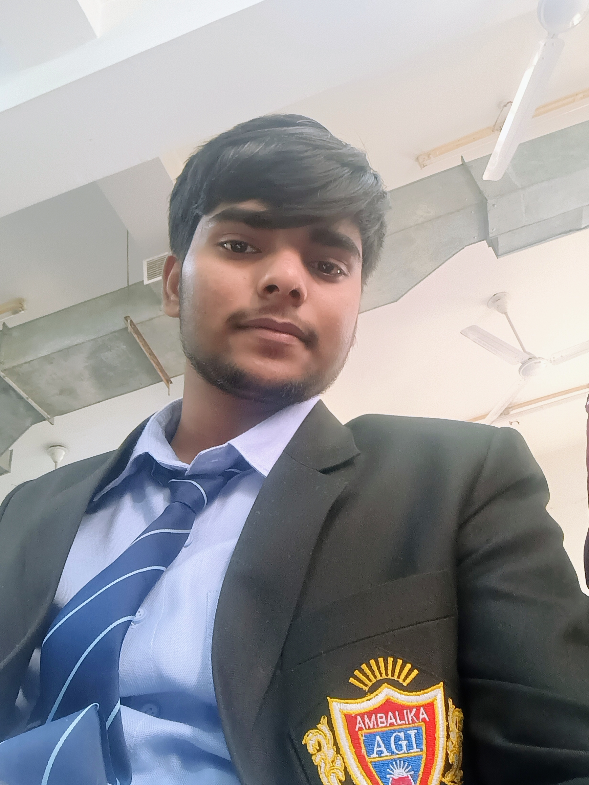

B.Tech Computer Science Student passionate about Software Development, AI and Cloud Computing.
Explore My Journey
Hello, I'mAshraf Ansari, a passionate Computer Science student currently pursuing my B.Tech degree. I am deeply interested in technology, software development, and problem-solving. My primary focus is on learning Java, Data Structures & Algorithms, and building a strong foundation in programming. I regularly practice coding problems on LeetCode to improve my logical thinking and problem solving abilities. Apart from coding, I enjoy exploring modern technologies such as Artificial Intelligence, Cloud Computing, and Web Development. I believe technology has the power to solve real-world problems and create innovative solutions that impact people's lives. Currently, I am learning HTML, CSS, JavaScript, and Java while working on personal projects to gain practical experience. I enjoy transforming ideas into working applications and continuously improving my development skills. I am also interested in AWS and cloud technologies, and I aim to build scalable applications in the future. My goal is to become a skilled software engineer who can contribute to meaningful projects and create products that make a difference. I am a strong believer in continuous learning and self-improvement. Every day, I dedicate time to coding, learning new concepts, and improving my technical knowledge. When I am not coding, I enjoy exploring new technologies, watching tech content, and planning future projects. I am always excited to take on new challenges and expand my skill set. My journey in technology has just begun, and I am motivated to learn, build, and grow as a developer while preparing for internships and future opportunities in the software industry.
Responsive personal portfolio website.
Java based Timetable management system(app).
Future AI + AWS Project.